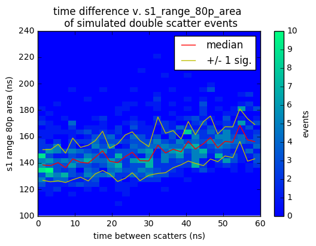
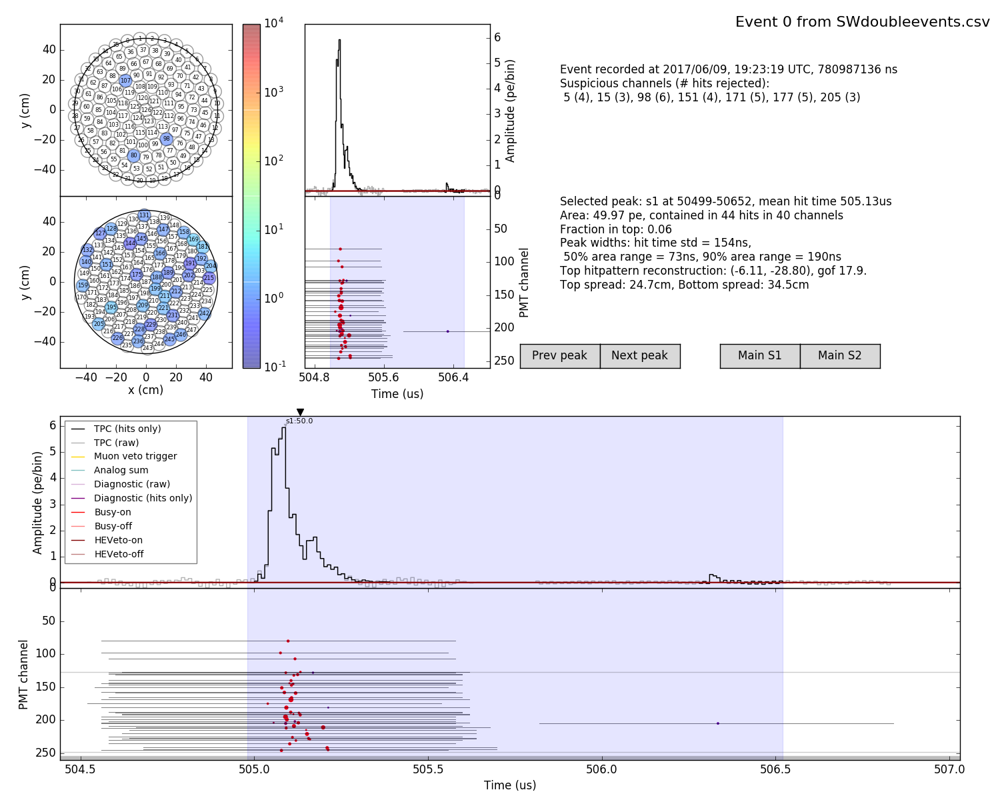
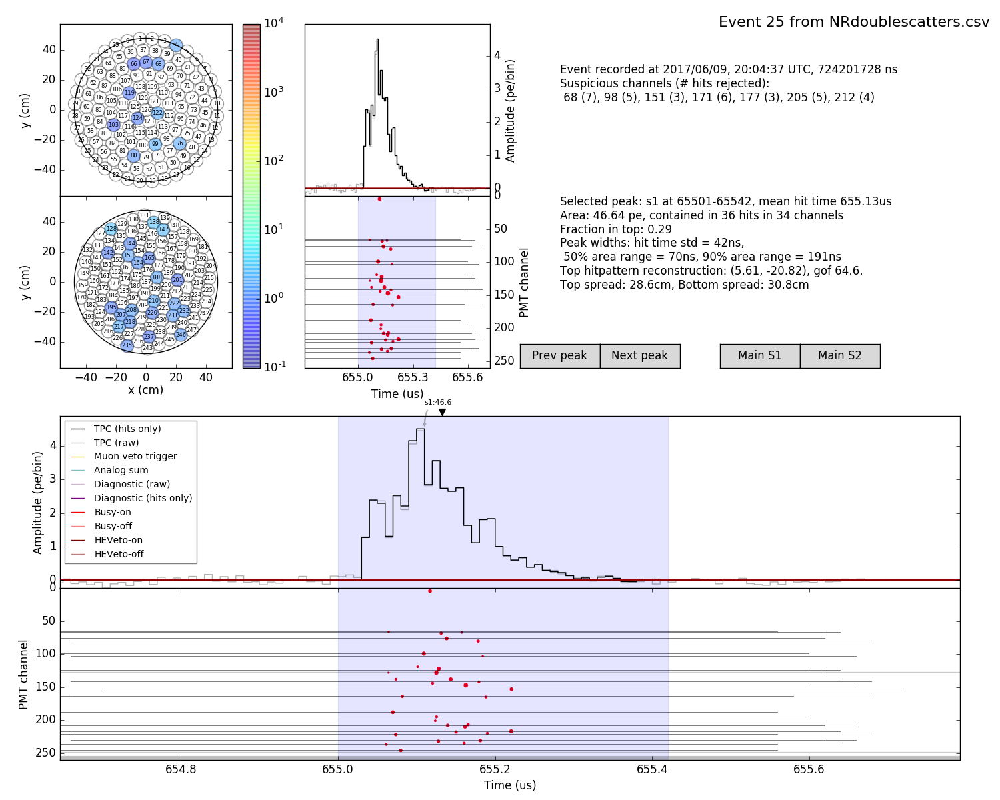

See dependence of s1_80_p_area on time between scatters in double scatter events.
I produced a clearer picture (I think) of the s1 waveform shape as a function of time between scatters of a double scatter events from simulated data. Seen in "Double Scatters in AmBe" of Erik Hogenbirk's.

What is going on here??
See an increase in s1_80_p_area as time between two NR identical scatters in the same event increases. Mean increases by a rough 12% from 0 ns to 60ns separation. This makes sense, as the two scatters in the same event should produce resolvable s1s. But, when I look at the simulated waveforms, the shapes of the s1s look very similar! Why are there not two distinct peaks of the same size when I have two identical NR events separated by a time resolvable by the detector?
Some Waveforms:
5 ns sep

55 ns difference
